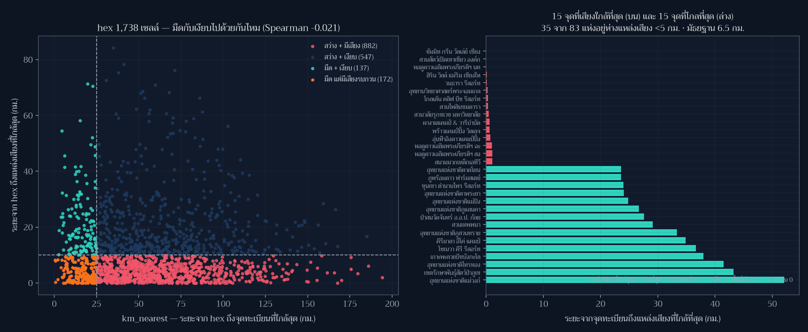

Day 11 · Senses: Sound — ที่ที่มืดที่สุด คือที่ที่เงียบที่สุดไหม (คำตอบ: ไม่เกี่ยวกันเลย)

โจทย์ทางการวันนี้คือ **“How do you hear something? How do you map a soundscape? Noise pollution mapped?””
ซีรีส์นี้วัด “แสง” มาสิบวันแล้ว วันนี้ผมจึงเพิ่มแกนที่สองที่คู่กันโดยธรรมชาติ: เสียง และตั้งคำถามที่ทดสอบได้ทันที — ที่ที่มืดที่สุด คือที่ที่เงียบที่สุดไหม ถ้าคำตอบคือใช่ เราก็มีเหตุผลเพิ่มอีกข้อในการปกป้องผืนฟ้าเดียวกัน ถ้าไม่ใช่ เราก็เพิ่งทำลายสมมติฐานที่หลายคน (รวมถึงผม) ใช้พูดโดยไม่คิด
ที่มาของแผนที่
ผมสร้างแกน “เงียบ” ด้วยวิธีที่ซื่อสัตย์แต่ยังไม่ใช่การวัดจริง: สำหรับ hex แต่ละเซลล์จาก Day 3 คำนวณระยะทาง (เมตร) จากศูนย์กลาง hex ไปถึง แหล่งเสียงที่ใกล้ที่สุด ในสี่ชนิดจาก Natural Earth 10m
| แหล่งเสียง | จำนวนที่ตกในกรอบไทย | เหตุผลที่นับ |
|---|---|---|
| ถนนสายหลัก (NE ไม่จำแนกชั้น: Unknown 1,537 / Road 238 / Major Highway 39 → ใช้ทุกสาย) | 1,814 เส้น | เสียงจราจร คือแหล่งที่ครอบคลุมที่สุด |
| พื้นที่เมือง (polygon) | 127 ผืน | เสียงชุมชน/กิจกรรมกลางคืน |
| รถไฟ | 104 เส้น | เสียงเป็นช่วง ๆ แต่ไกล |
| สนามบิน | 13 จุด | เสียงเครื่องบินกินบริเวณกว้าง |
แล้วเทียบกับ km_nearest (ระยะถึงจุดอนุรักษ์ท้องฟ้ามืดในทะเบียน) ที่ใชามาตั้งแต่ Day 3 ทั้งสองแกนเป็น proxy ทั้งคู่ — ผมไม่ได้วัด dB และไม่ได้วัด sky brightness จริง
เกณฑ์ที่ใช้ติดป้ายไว้บนแผ่น: มืด = km_nearest ≤ 25 กม. · เงียบ = ระยะถึงแหล่งเสียง ≥ 10 กม. และสำหรับจุดทะเบียน เสียงถึง = < 5 กม.
ผลลัพธ์

1. ไม่มีความสัมพันธ์ระหว่างความมืดกับความเป็นระเบียบของเสียง
| สถิติ (ระดับ hex, n = 1,738) | ค่า |
|---|---|
mean / median ของ km_nearest (ความมืด) |
57.4 / 51.9 กม. |
mean / median ของระยะถึงแหล่งเสียง (ความเงียบ) |
11.1 / 7.1 กม. |
min / max ของระยะถึงแหล่งเสียง |
0.0 / 84.3 กม. |
Spearman(km_nearest, ระยะถึงแหล่งเสียง) |
−0.021 (p = 0.39) |
| ความไว: ใช้เฉพาะ Major Highway (39 เส้น) | Spearman −0.039 · hex “เงียบ” 1,394 เซลล์ |
2. สี่กลุ่มที่ได้ — และนี่คือตัวเลขที่สำคัญกว่าค่าสหสัมพันธ์
| กลุ่ม | จำนวน hex | พื้นที่ |
|---|---|---|
| มืด + เงียบ | 137 | 39,423 ตร.กม. |
| มืด แต่มีเสียงรบกวน | 172 | 49,020 ตร.กม. |
| สว่าง + เงียบ | 547 | 156,654 ตร.กม. |
| สว่าง + มีเสียง | 882 | 251,768 ตร.กม. |
แปลว่าใน hex ที่ “มืด” ตามทะเบียน 309 เซลล์ 172 เซลล์ (56%) อยู่ใกล้แหล่งเสียงไม่ถึง 10 กม. ผืนฟ้ากับผืนเสียงจึงไม่ได้เป็นของคู่กัน — ที่ที่มืดอาจเป็นริมทางหลวงก็ได้
3. ฝั่งจุดทะเบียน 83 แห่ง — median ระยะถึงแหล่งเสียง = 6.5 กม. (min 0.0, max 52.1) และ 35 จาก 83 แห่งอยู่ใกล้แหล่งเสียง < 5 กม. แหล่งที่ถูกชี้ว่าใกล้ที่สุด เรียงเป็นจำนวนจุด: ถนนสายหลัก 63 แห่ง พื้นที่เมือง 16 แห่ง รถไฟ 4 แห่ง สนามบิน 0 แห่ง
ชื่อที่ “เสียงถึง” ที่สุด five แห่ง: ซัมมิท กรีน วัลเล่ย์ เชียงใหม่ คันทรี คลับ (0.0 กม. · ในพื้นที่เมือง) · สวนสัตว์เปิดเขาเขียว (0.0) · หอดูดาวเฉลิมพระเกียรติฯ นครราชสีมา (0.0) · สิริน วิลล์ แม่ริม (0.11) · วนธารา รีสอร์ท (0.12 · ติดถนนสายหลัก)
ส่วน five แห่งที่เงียบที่สุด: อุทยานแห่งชาติแม่วงก์ (52.1 กม.) · เขตรักษาพันธุ์สัตว์ป่าภูเขียว (43.3) · อุทยานแห่งชาติไทรทอง (41.5) · เกาะพะลวยบีชบังกะโล (38.0) · โซเนวา คีรี รีสอร์ท (36.7)

การที่ หอดูดาว แห่งหนึ่งถูกนับว่าอยู่ในพื้นที่เมือง (ระยะ 0.0 กม.) ไม่ได้แปลว่าหอดูดาวนั้นเสียงดัง แต่แปลว่า polygon “พื้นที่เมือง” ของ Natural Earth ขยายกินพื้นที่รอบ ๆ ละเอียดกว่าที่เราคิด และนั่นคือเหตุผลที่ผมรายงานเป็น “จุดที่ต้องไปฟังเอง” ไม่ใช่ “จุดที่เสียงดังแล้ว”
วิธีทำแบบย่อ
ขั้นที่ 1: รวม layer เป็น geometry เดียวก่อนวัดระยะ
from shapely.ops import unary_union
import shapely
def dist_km(geoms_wgs):
merged = unary_union(list(gpd.GeoSeries(geoms_wgs, crs="EPSG:4326").to_crs(EQ).values))
pts = np.array([Point(x, y) for x, y in cent], dtype=object) # cent อยู่ในหน่วย *เมตร*
return shapely.distance(pts, merged) / 1000.0ใช้ GeoSeries.distance(GeoSeries) ตรง ๆ ไม่ได้ — มัน align index ของสองฝั่งแล้วคืนค่า ที่รูปผิดไปเงียบ ๆ (ได้ array ยาว 1,814 แทน 1,738 แล้วพังตอน np.vstack)
ขั้นที่ 2: บั๊กที่ผมจับได้ด้วย assert ของตัวเอง
รอบแรก ระยะถึงแหล่งเสียง ออกมา mean 13.0 · min 12.95 · max 13.0 ทุกเซลล์เท่ากันหมด สาเหตุคือลืม reproject จุดศูนย์กลาง hex — วัดระยะระหว่างจุด ดีกรี กับ union หน่วย เมตร ซึ่งได้ค่าที่ “ดูสมเหตุสมผล” จน guard_distances (ที่เช็กแค่ว่าไม่เกิน 2,500 กม.) ไม่ร้อง
ผมจึงเพิ่ม guard ใหม่:
guard_variance(noise_km, "noise_km", min_spread_km=3.0) # ทุกค่าเท่ากัน = ผิดปกติ
guard_bbox(cent_deg, 96.5, 107.6, 4.3, 21.7) # จุดต้องอยู่ในกรอบไทย (ดีกรี)
guard_crs((cent[:,0].min(), cent[:,1].min(), cent[:,0].max(), cent[:,1].max()), expect="metres")ขั้นที่ 3: ตรวจความไวต่อสมมติฐาน
เพราะ NE 10m ไม่จำแนกชั้นถนนในไทย (1,537 จาก 1,814 เส้นเป็น type = Unknown) ผมจึงรันซ้ำ โดยใช้เฉพาะ Major Highway 39 เส้น เป็นตัวแทนถนน → Spearman จาก −0.021 เป็น −0.039 ข้อสรุปไม่เปลี่ยน: มืดกับเงียบไม่เกี่ยวกัน ไม่ว่าถนนจะนิยามแบบหลวมหรือแคบ
ข้อจำกัดที่ต้องบอกตรง ๆ
- ไม่ได้วัดระดับเสียงจริง (dB) — นี่คือ “ระยะทางถึงแหล่งเสียง” ซึ่งเป็น proxy หยาบ ลม ภูมิประเทศ กำแพงกันเสียง และเวลาของวัน ล้วนมีผลต่อการได้ยินจริง
- Natural Earth 10m เป็นชั้นข้อมูลเชิงภาพรวม ถนน 1,537 เส้นไม่มีชั้นความสำคัญ, polygon พื้นที่เมืองหยาบระดับหลายกิโลเมตร → จุดทะเบียนหลายแห่ง “ติด 0.0 กม.” เพราะ polygon คลุมทับ ไม่ใช่เพราะอยู่กลางเมือง
- สนามบิน 13 จุด คือเฉพาะที่ NE บันทึก ไม่ใช่ทางวิ่ง/เส้นทางบินทั้งหมด
- ความมืดยังเป็น proxy วนตัวเอง เหมือน Day 8–10:
km_nearestคือระยะถึง ทะเบียน ไม่ใช่ค่าความสว่างของท้องฟ้า - เกณฑ์ 10 กม. (เงียบ) และ 5 กม. (เสียงถึงจุดทะเบียน) เป็น การตัดสินใจของผู้ทำแผนที่ ไม่ใช่มาตรฐานทางเสียงวิทยา
ไฟล์ประกอบ
- day11_hex_quadrants.geojson — hex 1,738 เซลล์พร้อม
km_nearest,noise_km,nearest_source,quadrant - day11_stats.json — ตัวเลขทุกตัวในโพสต์นี้ พร้อม
metric_definitions
บทเรียน
- สมมติฐานที่ “ฟังดูชัด” ต้องถูกทดสอบก่อนถูกใช้เป็นเหตุผล — ผมเกือบเขียนว่า “ที่มืดคือที่เงียบ เพราะทั้งคู่ไกลคน” ซึ่งเป็นประโยคที่ดูมีเหตุผลมากและผิดในข้อมูล (Spearman −0.021, p=0.39)
- ค่าที่ “ดูสมเหตุสมผล” อันตรายกว่าค่าที่ดูผิด — 13.0 กม. ทุกเซลล์ผ่าน guard เดิมของผมทั้งหมด แต่ assert ที่ตรวจ การกระจาย จับได้ทันที ผมจึงเพิ่ม
guard_varianceเข้าชุดตรวจถาวร - การวัดระยะต้องระบุหน่วยของทั้งสองฝั่ง — จุดศูนย์กลางดีกรีกับ union หน่วยเมตรไม่ error มันแค่ให้ตัวเลขที่ผิดแบบแนบเนียน (บทเรียนเดียวกับ Day 7 แต่รอบนี้จับได้เร็วขึ้นเพราะ assert)
- ตรวจความไวต่อชั้นข้อมูลก่อนสรุป — ถนน “ทุกสาย” กับ “Major Highway เท่านั้น” ให้ผลต่างกัน น้อยมาก (−0.021 vs −0.039) ซึ่งทำให้ข้อสรุปนี้แข็งขึ้น ไม่ใช่เพราะตัวเลขสวย แต่เพราะมันไม่เปลี่ยน
- ชื่อสถานที่ต้องอ่านจากไฟล์ข้อมูล — รายชื่อ 5 จุดเงียบสุด/ดังสุดในโพสต์นี้ผมดึงจาก
day11_stats.jsonที่สคริปต์เขียนออก ไม่ได้ถอดจากภาพ (บทเรียนราคาแพงจาก Day 6)
พรุ่งนี้ธีม Power (Day 12) — ข้อความทางการเขียนว่า “Power as in nuclear power? Or physical power or influence? Power grid on a map?” พร้อมต่อท้ายว่า “Read this the way you want, like every other prompt.”
ซึ่งต่อจากแผ่นนี้ได้พอดี: ถ้าความมืดไม่ได้มากับความเงียบ คำถามถัดไปคือ ใครมีอำนาจกำหนดว่าตรงไหนจะได้มืด 🗺️